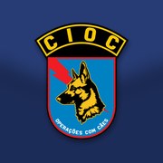

Carregando o sistema…
Demorando? Se for o primeiro acesso, entre na sua conta @pm.pr.gov.br pelo navegador e volte aqui.
O SISTEMA K9 precisa de conexão para mostrar e salvar os dados. Nada é guardado no aparelho.